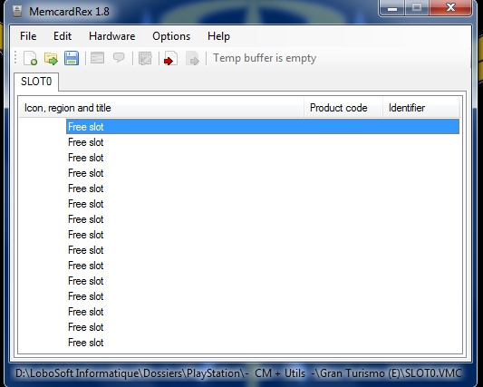
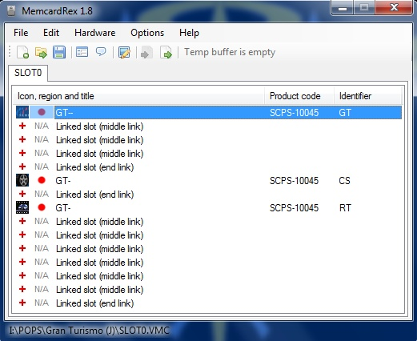
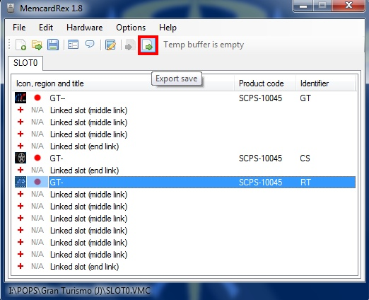
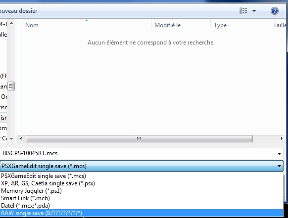
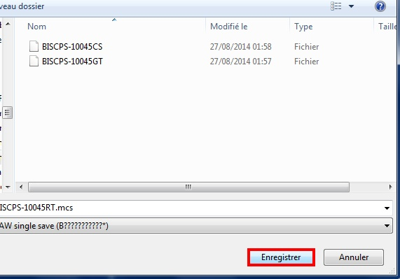

VMC To PMC
📎 Recovered from the ShaolinAssassin wiki · snapshot 20240310062017
[VMC] Use your VMC saves on a PS1 retail console
[Original french tutorial by Subaru-San] @metagames
Software Requirements :
-
[PS2 side] Copy/paste (uLE) your VMC from POPS directory to USB, then to your PC ;
-
[PC side] Launch MemcardRex, click “Open”, then “All files”, then browse to your VMC. You will see your VMC content ;
-
[PC] Select the save you want to export, click “Export”, then choose “RAW single save (B???????????*)”, then save ;
Your save is now extracted from the VMC.
-
[PS2] Time to import it to your PS1 MC. Use uLE to copy/paste it from USB to PS1 MC.
-
Done.
Images & screenshots




